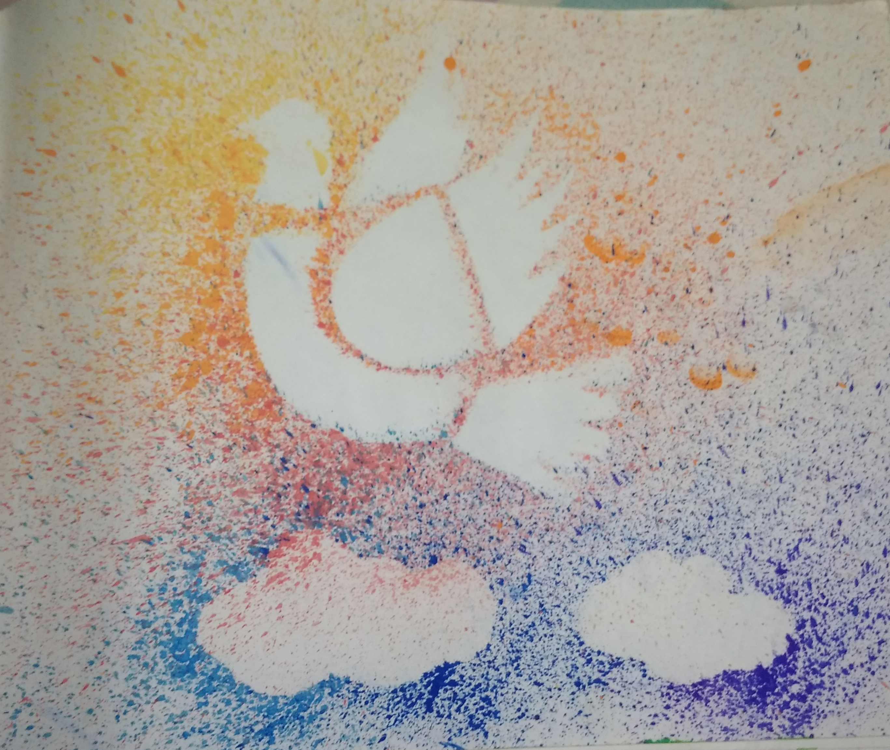
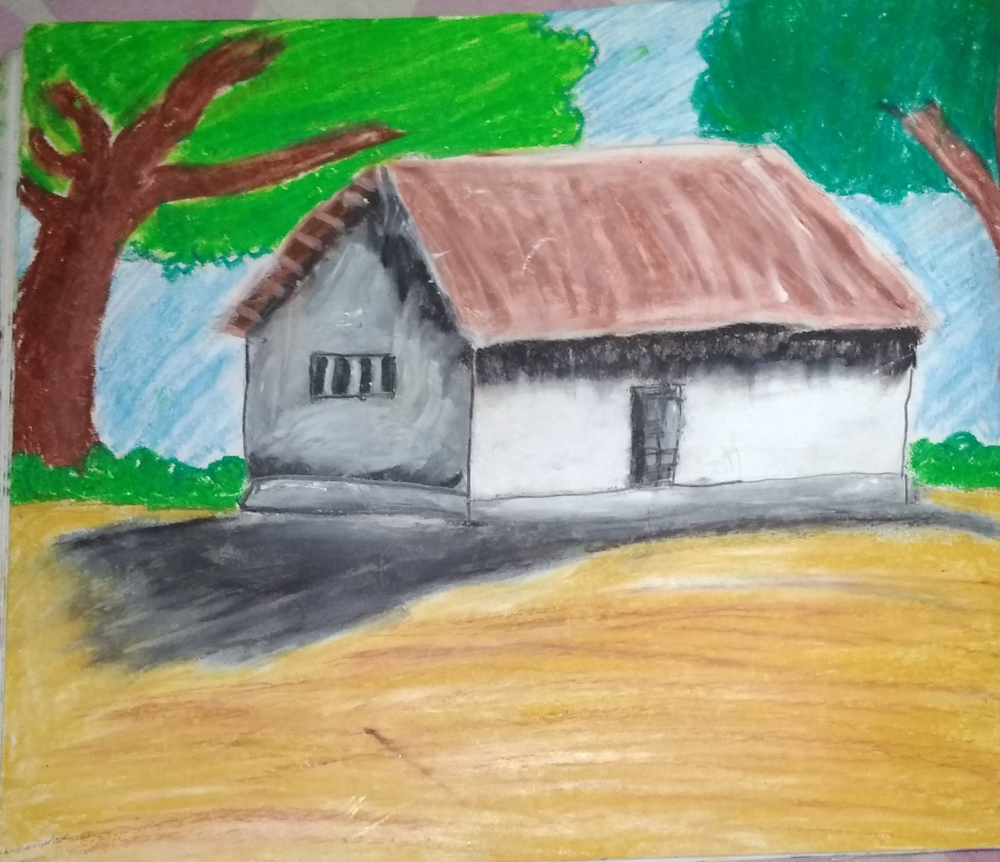
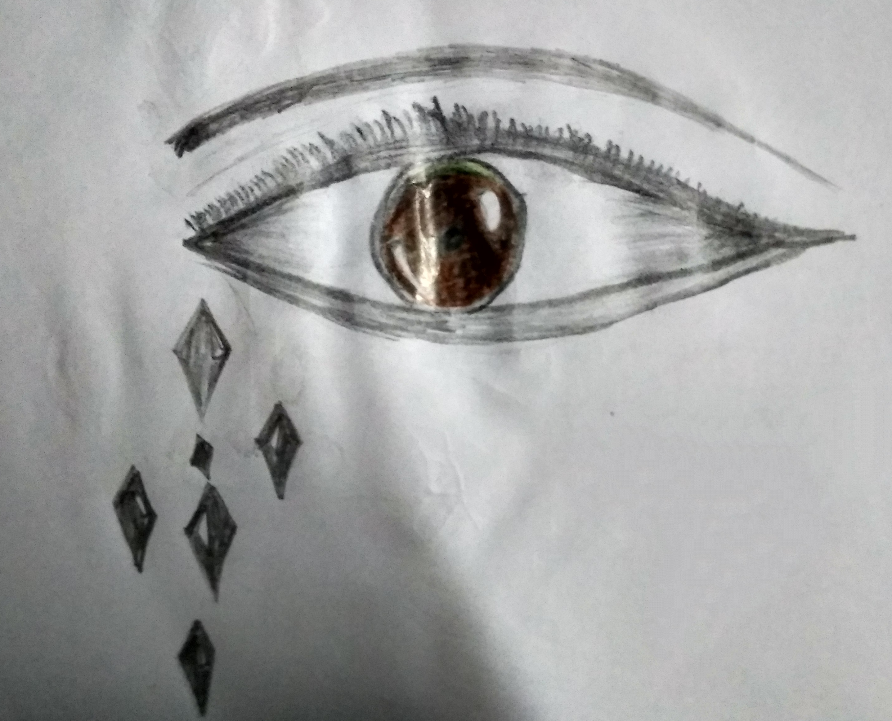
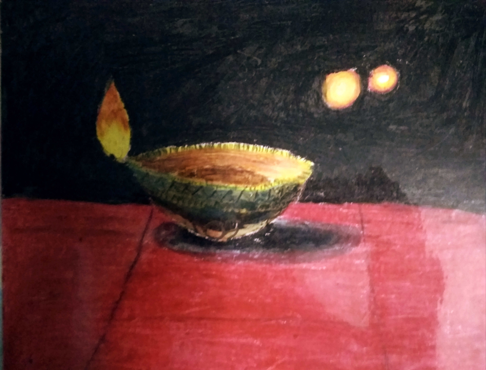
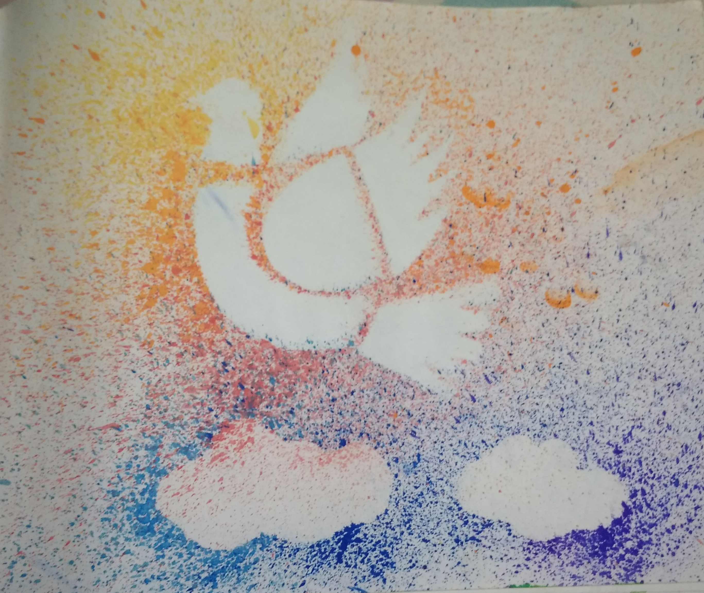
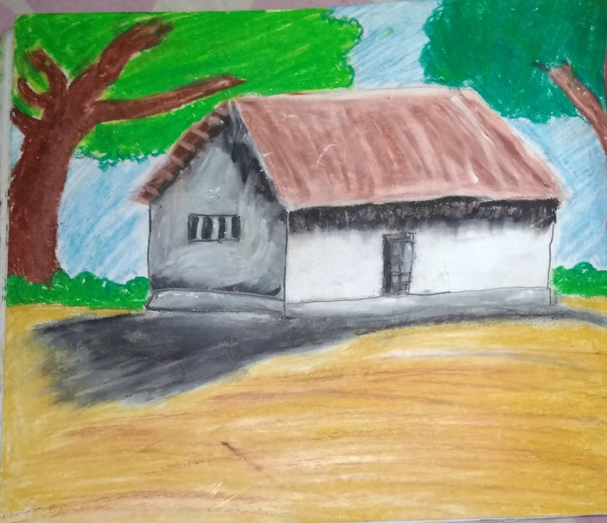
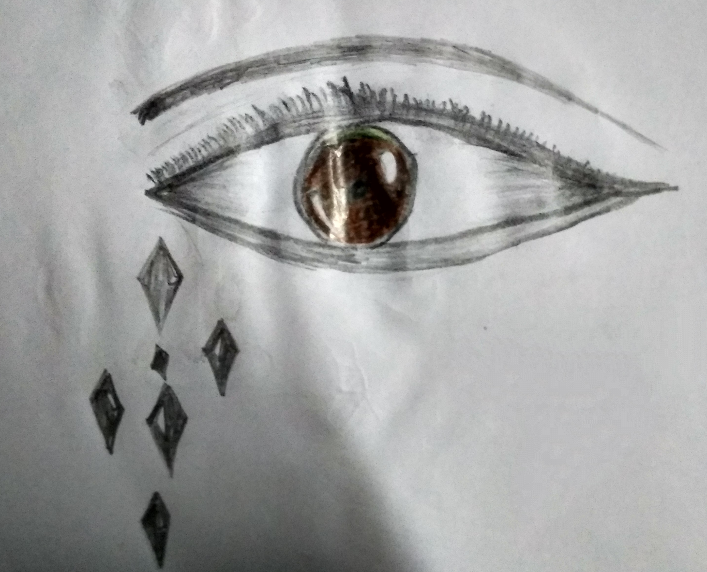
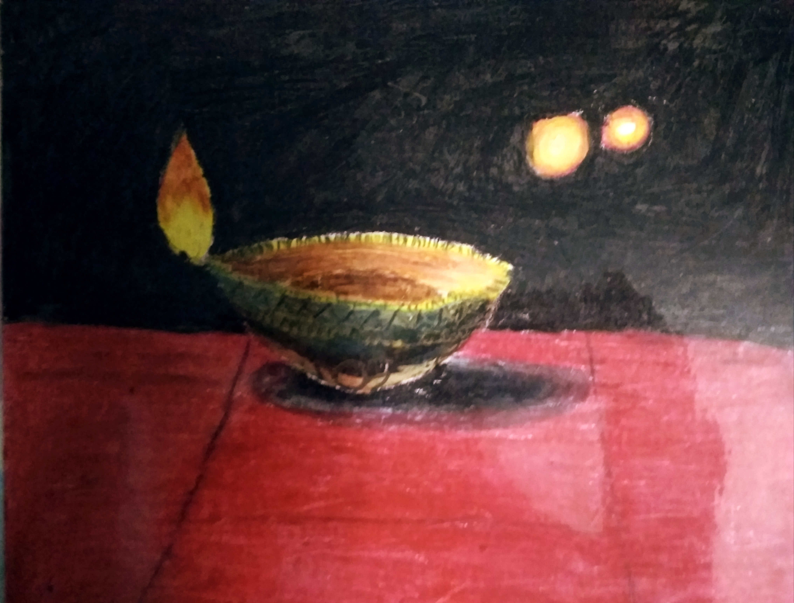

My Favorite Hobby
Painting
Painting is the practice of applying paint, pigment, color or other medium to a solid surface (called the "matrix" or "support").[1] The medium is commonly applied to the base with a brush, but other implements, such as knives, sponges, and airbrushes, can be used.
In art, the term painting describes both the act and the result of the action (the final work is called "a painting"). The support for paintings includes such surfaces as walls, paper, canvas, wood, glass, lacquer, pottery, leaf, copper and concrete, and the painting may incorporate multiple other materials, including sand, clay, paper, plaster, gold leaf, and even whole objects.
Painting is an important form in the visual arts, bringing in elements such as drawing, composition, gesture (as in gestural painting), narration (as in narrative art), and abstraction (as in abstract art).[2] Paintings can be naturalistic and representational (as in still life and landscape painting), photographic, abstract, narrative, symbolistic (as in Symbolist art), emotive (as in Expressionism) or political in nature (as in Artivism).
A portion of the history of painting in both Eastern and Western art is dominated by religious art. Examples of this kind of painting range from artwork depicting mythological figures on pottery, to Biblical scenes on the Sistine Chapel ceiling, to scenes from the life of Buddha (or other images of Eastern religious origin).


 






